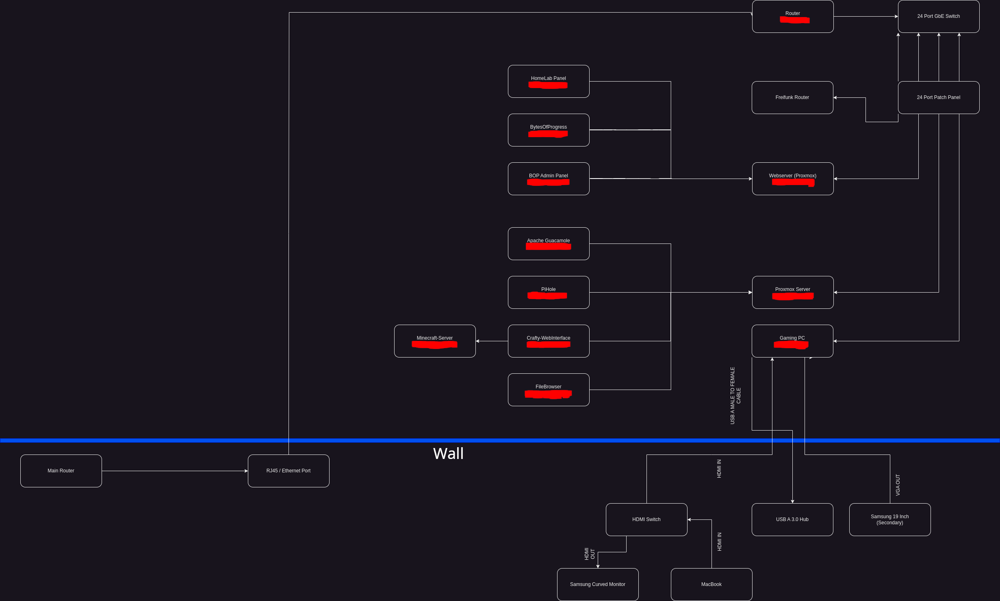

BytesOfProgress
HomeLab Update
15th March 2024 / 06:00 PM
I recognized that I started this website almost 1.5 years ago, but never showed my homelab. I made quite some progress, and decided, that I want to show its current state.
Quick overview:
back